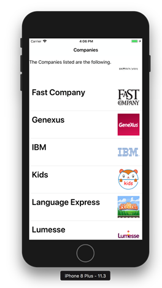
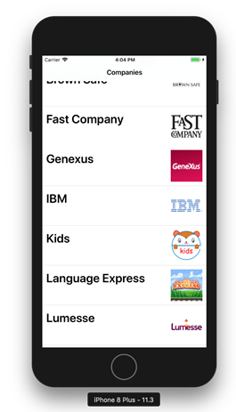

Grids in Native Mobile Applications support the Auto Grow property. Its purpose is to enable scrolling of the whole screen and not only the grid when the grid has more rows to show than the display can show.
Take a look at the Light CRM default screen:

What if you want the text block "The Companies listed are the following" to scroll too when scrolling the Grid?
Using Auto Grow Property the Grid can be configured so that when a Grid grows the scroll moves the whole screen instead of just scrolling the grid.

You can see this example working on the LightCRM (X Evolution 2) sample.
This options is available as of GeneXus X Evolution 2 Upgrade 4.
| Backlinks | |
| Auto Grow property | Enable Header Row Pattern property |
| Toc:Native Mobile Applications Development | |